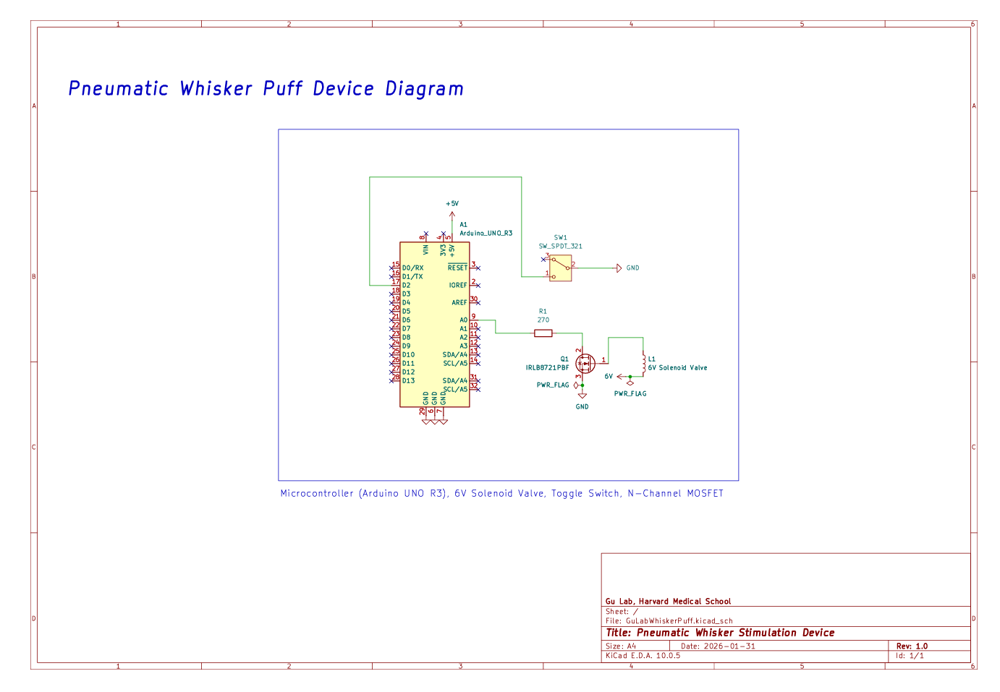

01Overview
- Air is intermittently puffed onto a rodent’s whisker pad while cellular & vascular activity in the corresponding barrel cortex is recorded with widefield microscopy.
- Designed to address weaknesses in existing whisker stimulation tools by precisely and evenly distributing stimulation over the whisker pad, while reducing stimulus habituation.
- Arduino-based system.
- Pneumatic system that delivers room air supply through a nozzle towards the rodent’s whisker pad. The air is pulsed (optionally at randomly varying frequencies) to reduce the rodent’s habituation to the stimulus. This change in airflow is switched through an N-channel MOSFET driving a 3-way electromagnetic solenoid valve.
02Circuit

03Bill of Materials
| Component | Part | Notes |
|---|---|---|
| Microcontroller | Arduino UNO R3 | USB-powered |
| MOSFET | IRLB8721 | Logic-level N-channel |
| Solenoid valve | 3-way, 6 V | External supply |
| Gate resistor | 270 Ω | Gate to Arduino pin |
| Pneumatic Tubing | 3mm Silicone Tubing | On/off control |
| Switch | SPDT toggle | Override for on/off control |
04Links & Further Viewing
View on GitHub.
See user guide: